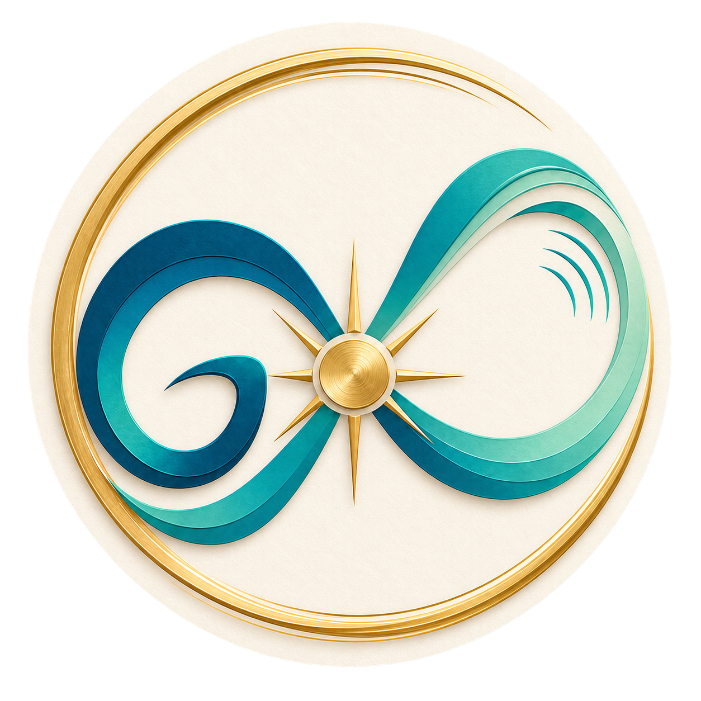

GIV YOGYOUR GUIDED HOME PRACTICE
This week’s journeyA balanced five-day path from the teacher’s Paath Yojna, followed by rest and a Sunday reflection.
Choose anything you would like safety guidance for. Your choices stay on this device. GIV YOG highlights a pose if its PDF caution conflicts with a selected condition.